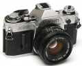

器材库 > 胶片单反相机 > AE-1

规格总览
产品类型
手动对焦胶片单反相机
发布日期
1976-04
厂家推荐价格
50,000.00 （日元）
镜头卡口
Canon FD/FL/NEW FD
停产
是
取景规格
取景器
眼平五棱取景器, 固定
取景器信息
指针显示光圈，LED显示手控，曝光不足警告
景深预视
有
曝光控制
测光模式
中央重点测光
测光范围
1EV~18EV
曝光模式
S（快门速度优先自动曝光）, M（手动测光曝光）
ISO感光度
25-3200
曝光补偿
±5EV
快门
快门类型
电子控制，横走式，焦平面快门
快门速度
1/1000 - 2秒 + B
B门
有
外接闪光灯
外接闪光灯
佳能155A闪光灯
PC插孔
有
过片系统
卷片器
A型卷片器，每秒2幅
电源
电池
4G13/4LR 44 一枚
外观
颜色
银色
尺寸
141 × 87 × 47.5mm
重量
590g
其它规格
备注
加装50/1.4镜头82,000日元
开颂2013-12-19 21:064.83 分
操作性 4.00功能性 5.00美观性 5.00趣味性 5.00耐用性 5.00性价比 5.00
西行人2005-03-31 18:154.58 分
操作性 4.50功能性 4.50美观性 5.00趣味性 4.50耐用性 4.50性价比 4.50
罗罗细2004-12-22 22:014.33 分
操作性 4.50功能性 5.00美观性 4.50趣味性 4.00耐用性 3.50性价比 4.50
sk22662004-07-25 15:144.42 分
操作性 5.00功能性 4.50美观性 5.00趣味性 4.00耐用性 3.50性价比 4.50
张振宁2003-10-18 15:174.17 分
操作性 4.00功能性 3.50美观性 4.50趣味性 4.00耐用性 4.50性价比 4.50
东沉西救2003-06-07 22:453.67 分
操作性 4.00功能性 4.00美观性 3.50趣味性 4.00耐用性 3.50性价比 3.00
spark0282003-06-07 01:244.58 分
操作性 4.50功能性 4.00美观性 4.50趣味性 4.50耐用性 5.00性价比 5.00
kermitao2002-07-28 01:063.92 分
操作性 3.50功能性 3.00美观性 4.00趣味性 4.00耐用性 4.50性价比 4.50
茄子2002-07-15 16:094 分
操作性 3.50功能性 3.00美观性 4.00趣味性 4.00耐用性 4.50性价比 5.00
Ivanzhong2002-07-11 14:033.92 分
操作性 4.00功能性 3.50美观性 4.00趣味性 3.50耐用性 4.50性价比 4.00
产品图 / 样片
佳能 AE-1
评测 / 相关文章
该产品暂无存档的评测文章